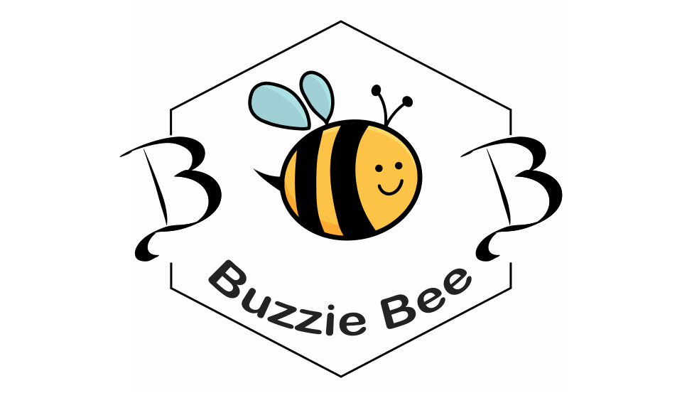

Real support for youth and the people who care about them.
No corporate bullshit. Just a friendly coach who gets it.
Lifelong learner. Current CYCFS Master’s student at the University of Victoria. Someone who’s been in the work and in the mess.
Places I’ve shown up:
Those kids don’t need another program that treats them like a problem. They need a friendly coach who actually sees them.
A cookbook written by a depressed youth counsellor for the days when even making toast feels impossible.
Easy recipes. Leftover plans. Grounding skills in the back. Made for real life.
Buy on Amazon